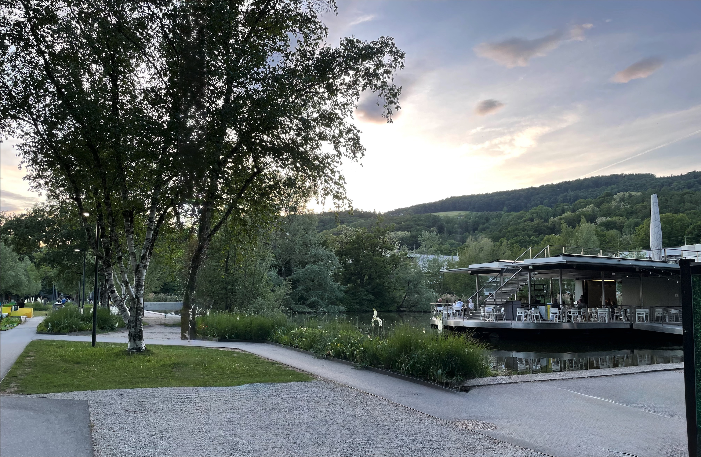
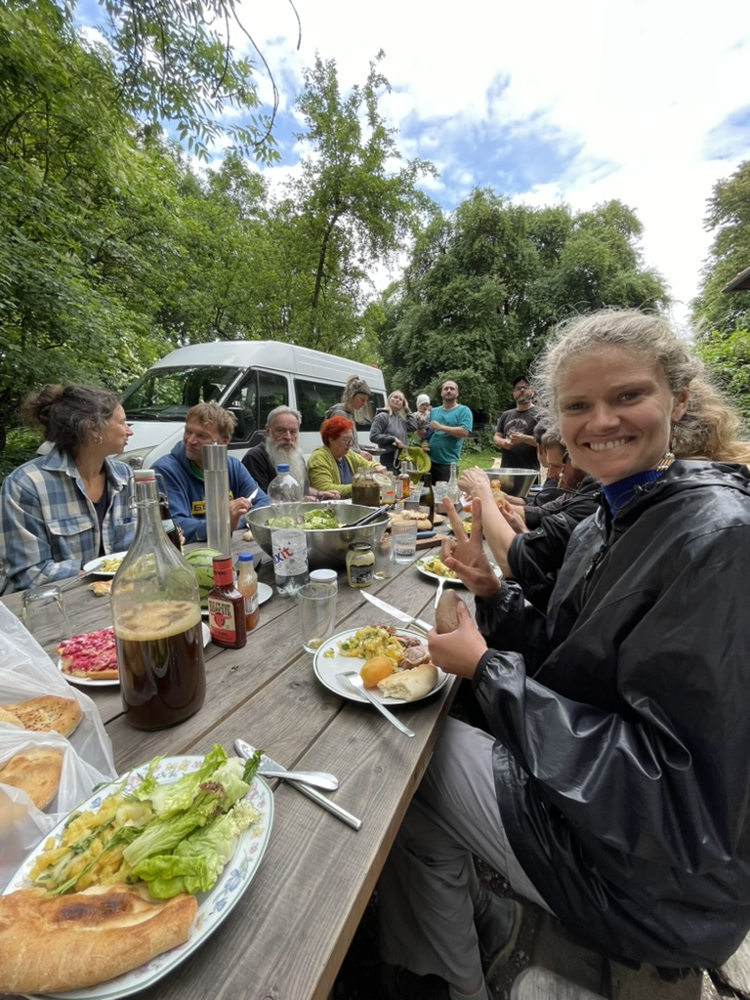
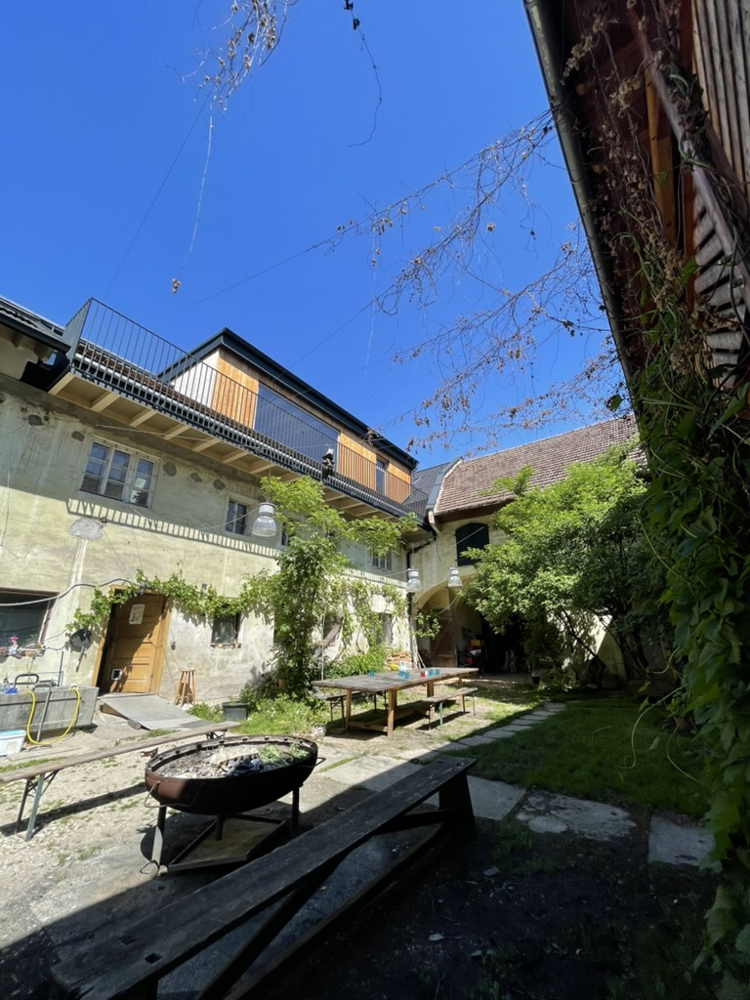
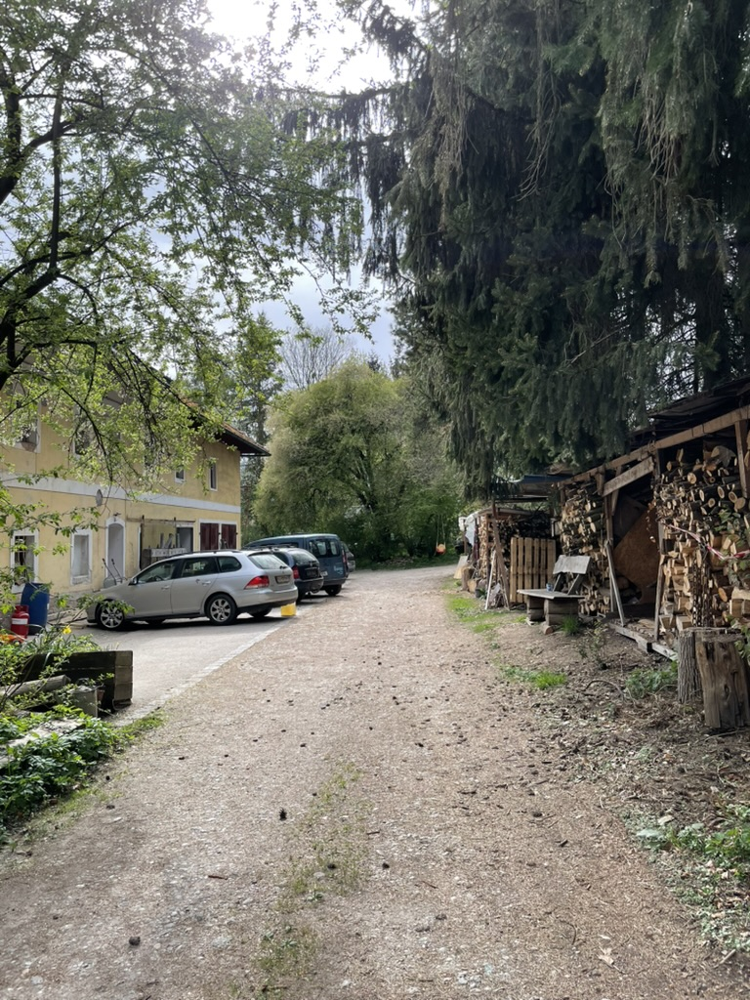

La Johannes Kepler Universität Linz est une université autrichienne reconnue pour son excellence en recherche et enseignement, notamment dans le domaine des statistiques. Mon stage au sein de ce département m'a permis de découvrir des méthodes avancées d'analyse de données et de participer à des projets innovants en science des données.
Cliquez ici pour télécharger le rapport de stage en français
Cliquez ici pour télécharger le rapport de stage en anglais
Cliquez ici pour télécharger le diaporama de mon oral de stage
La Johannes Kepler Universität se trouve à Linz, en Autriche. Cette université moderne est située dans un cadre verdoyant, à proximité du centre-ville.



J'ai découvert la culture autrichienne, notamment à travers la gastronomie et les traditions locales. J'ai également eu l'occasion de rencontrer des étudiants internationaux et de partager des expériences culturelles enrichissantes. Mais ce qui m'a le plus marqué, c'est le lieu où j'ai vécu. Il s'agit d'une ferme communautaire, un endroit alternatif où les gens vivent ensemble, partagent des ressources et pratiquent l'agriculture durable. J'ai appris à apprécier la simplicité de la vie en communauté. C'était une expérience unique qui m'a permis de me rapprocher de la nature et de découvrir un mode de vie différent.